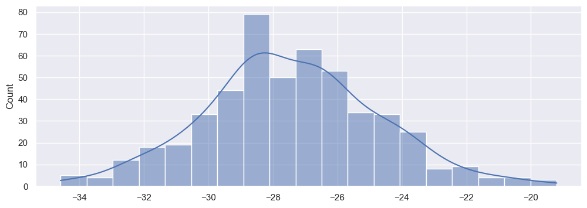
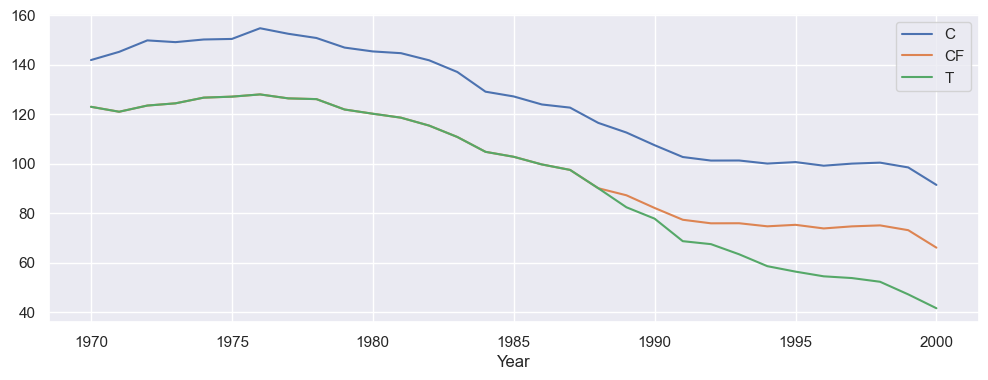
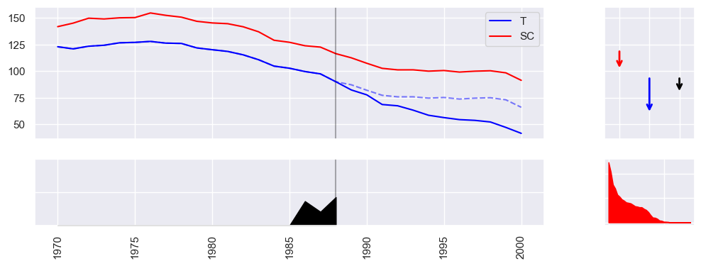

Part III: Analysis & Visualization
[20]:
%%capture
%run ./part2.ipynb
Lastly, we want to give some idea on how to visualize results.
To learn more about how the error estimation was originally derived, we can check the corresponding distribution by plotting the estimates of each of the runs:
[21]:
vv = [run.effect.value for run in runs]
sns.histplot(vv, kde=True)
[21]:
<AxesSubplot: ylabel='Count'>

Each post-analysis will be different depending on the estimator. We would like a give an example of SDID here. The available additional information stored by the estimator are:
[33]:
effect = result.effect
effect.data.keys()
[33]:
dict_keys(['lambd', 'omega', 'solvers', 'did', 'error'])
The DID results give us additional information about how the ATT is actually calculated:
[36]:
effect['did']
[36]:
{'att': -15.603827872733866,
'delta_contr': -19.19204093267264,
'delta_treat': -34.795868805406506,
'pre_contr': 120.49828909527162,
'post_contr': 101.30624816259898,
'pre_treat': 95.14586886957318,
'post_treat': 60.35000006416667}
The unit weights (omega) with at least 1% contribution
[49]:
effect['omega'].sort_values(ascending=False).loc[lambda x: x >= 0.01]
[49]:
State
Nevada 0.124489
New Hampshire 0.105048
Connecticut 0.078287
Delaware 0.070368
Colorado 0.057513
Illinois 0.053388
Nebraska 0.047853
Montana 0.045135
Utah 0.041518
New Mexico 0.040568
Minnesota 0.039495
Wisconsin 0.036667
West Virginia 0.033569
North Carolina 0.032805
Idaho 0.031468
Ohio 0.031461
Maine 0.028211
Iowa 0.025939
Kansas 0.021605
Pennsylvania 0.015352
Indiana 0.010135
Name: omega, dtype: float64
Similarly, the time weights
[51]:
effect['lambd'].sort_values(ascending=False).loc[lambda x: x >= 0.01]
[51]:
1988 0.427076
1986 0.366471
1987 0.206453
Name: lambd, dtype: float64
Or in general the treatment effect over time:
[63]:
# Control (C), Treatment (T), Time Weights (lambd), Intervention (W), Average Treatment Effect on the Treated (att), Counter Factual (CF)
effect.by_time.tail(5)
[63]:
| C | T | lambd | W | att | CF | |
|---|---|---|---|---|---|---|
| Year | ||||||
| 1996 | 99.202557 | 54.500000 | NaN | 1 | -19.350137 | 73.850137 |
| 1997 | 100.035935 | 53.799999 | NaN | 1 | -20.883516 | 74.683515 |
| 1998 | 100.433993 | 52.299999 | NaN | 1 | -22.781573 | 75.081573 |
| 1999 | 98.497346 | 47.200001 | NaN | 1 | -25.944925 | 73.144926 |
| 2000 | 91.437300 | 41.599998 | NaN | 1 | -24.484882 | 66.084880 |
[69]:
effect.by_time[['C', 'CF', 'T']].plot()
[69]:
<AxesSubplot: xlabel='Year'>

Some estimators will have directly a plotting method for the result:
[65]:
estimator.plot(result, show=False, CF=True)
None
